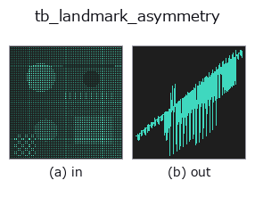

typed op• Data kinds: points → signal
• Call: fullseye.apply(img, "tb_landmark_asymmetry", a=0.5, b=0.5) (2-D model = एक image + दो scalar knobs a,b∈[0,1])

*Figure synthetic 128×128 input पर सच में चलाकर मिला output है। बाईं ओर input, दाईं ओर output। Point clouds ऊपर से देखे गए scatter के रूप में (brightness = z), 1-D series line के रूप में, volumes z दिशा में maximum-intensity projection के रूप में, videos बीच के frame के रूप में, complex images amplitude के रूप में, और जो return values चित्र नहीं बन सकते वे स्वयं values के रूप में दिखाए जाते हैं।*
*Knob a output नहीं बदलता (मापा गया: 0.1 / 0.5 / 0.9 पर एक जैसा)।*
*Knob b output नहीं बदलता (मापा गया: 0.1 / 0.5 / 0.9 पर एक जैसा)।*
Stages (पहले आने वाले ops → यह op, बाएँ से क्रम में):
▸ tb_landmark_asymmetry: stages का figure (docs site)
दूसरी images पर भी (synthetic scene / photo / coins। ऊपर की row में inputs, नीचे की row में उनके outputs। Knobs default पर):
▸ tb_landmark_asymmetry: दूसरी images पर output (docs site)
हर बाएँ-दाएँ pair की signed asymmetry। → (M,)।
हर जोड़ी के लिए, एक point को plane में mirror करके दूसरे से तुलना की जाती है, और plane के normal की दिशा में अंतर लौटाया जाता है। sign "दायाँ बाहर हो तो धनात्मक" है (mirror_plane_from_pairs normal को उसी दिशा में रखता है)। absolute value में न समेटें —— बाएँ-दाएँ में से कौन-सा हिस्सा बाहर निकला है, इसका अर्थ clinic में भी और inspection में भी अलग होता है।
pairs=None / plane=None दोनों के default mirror_plane_from_pairs जैसे ही हैं (पहले आधे/दूसरे आधे की जोड़ियाँ, और उन्हीं जोड़ियों से निकाला गया midsagittal plane)। plane छोड़ देने पर plane खुद भी उन्हीं जोड़ियों से तय होता है, इसलिए यह "plane तय करने वाली सामग्री से ही plane से विचलन मापना" हो जाता है —— फिर भी बाएँ-दाएँ का अंतर मापा जा सकता है (परिभाषा से midpoint किसी भी ओर नहीं झुकता), लेकिन अगर plane किसी अलग information source से तय हो सकता है, तो उसे देना ज़्यादा मज़बूत है।
2-D evolution registry में bridge किया गया shapestat का op landmark_asymmetry। implementation वही है, केवल calling convention को op(v, a, b) के अनुरूप किया गया है। इस op में कोई tuning knob नहीं है; a और b दोनों का उपयोग नहीं होता।
• Sample data catalog (DL URL / license) — 2-D के लिए skimage.data (BSD/public) + synthetic, 3-D के लिए real data sources (Stanford/PDS आदि) के DL URL।
• Operators का स्रोत और संदर्भ — इस op family के मूल research/methods के स्रोत।
नीचे का program सच में चलता है, यह जाँचा गया है (figure वाला ही input)। Studio की help में यह block buttons बन जाता है, जिनसे इसे वहीं load करके चलाया जा सकता है।
img_to_points 0.50 0.50 tb_landmark_asymmetry 0.50 0.50
▸ यह pipeline load करें · Load करके चलाएँ
नीचे के उदाहरण मूल ledger op landmark_asymmetry को call करते हैं। यह bridge op वही implementation है, बस fn(v, a, b) convention के अनुसार ढाला गया है, इसलिए व्यवहार वैसा ही लागू होता है (केवल call का रूप अलग है)।
• shapestat_landmark_tour — py -3.11 examples/shapestat_landmark_tour.py
signal को input के रूप में लेते हैं)identity · tb_create_funct_1d_array · tb_smooth_funct_1d_gauss · tb_smooth_funct_1d_mean · tb_derivate_funct_1d · tb_integrate_funct_1d · tb_zero_crossings_funct_1d · tb_abs_funct_1d
typed)tb_points_to_voxel · tb_estimate_point_normals · tb_iss_keypoints · tb_project_points · tb_render_point_depth · tb_statistical_outlier_removal · tb_radius_outlier_removal · tb_voxel_grid_downsample
*Provenance: ops.py — 2D operator registry. यह per-op note tools/opdocs.py md से अपने-आप generate होता है (हाथ से edit न करें)।*
© 2026 Kazufumi Furuse — Fullseye operator documentation. Licensed under Apache-2.0.